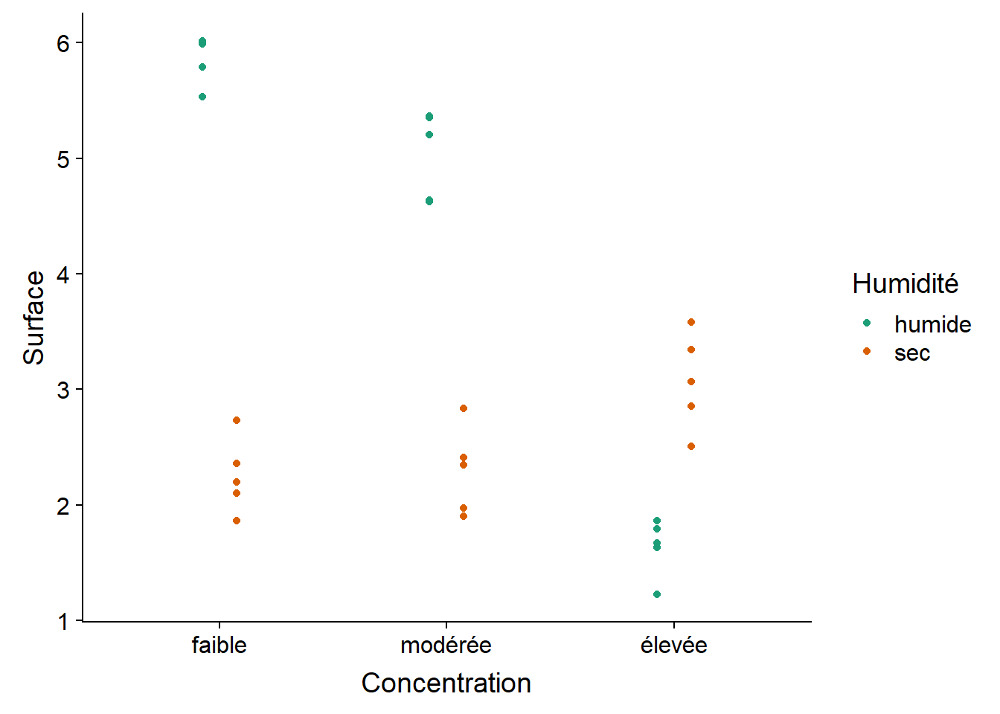

ANOVA à deux facteurs et blocs complets aléatoires
30 septembre 2019
Objectifs
Lors du dernier cours, nous avons vu des exemples d’analyse de la variance (ANOVA) à un facteur. Dans ce cours, nous utiliserons l’ANOVA pour estimer l’effet additif de deux facteurs (deux variables catégorielles) ainsi que leur interaction. Nous étudierons aussi l’analyse des plans expérimentaux en blocs (blocs complets aléatoires).
Finalement, nous reformulerons le modèle d’ANOVA comme modèle de régression linéaire et nous verrons différentes options de codage des variables catégorielles (facteurs).
Rappel: ANOVA à un facteur
Dans le modèle d’ANOVA à un facteur, la réponse \(y_{ik}\) de l’individu \(k\) du groupe \(i\) est la somme de trois effets: la réponse moyenne de la population en général (\(\mu\)), la différence entre la moyenne du groupe \(i\) et la moyenne générale (\(\alpha_i\)) et le résidu (\(\epsilon_{ik}\)) ou “erreur” qui constitue la partie de la réponse non-expliquée par le modèle.
\[ y_{ik} = \mu + \alpha_i + \epsilon_{ik} \] Le modèle suppose aussi que les résidus sont indépendants et suivent la même distribution normale.
\[ \epsilon_{ik} \sim N(0, \sigma) \]
ANOVA à deux facteurs sans interaction
Pour illustrer l’ANOVA à deux facteurs, nous utiliserons d’abord le jeu de données growth.csv provenant du manuel Statistics: An Introduction Using R. L’expérience compare le gain de poids (gain) de 48 animaux suivant trois types de régime alimentaire (diet) avec quatre types de suppléments (supplement). Il y a donc 12 groupes (toutes les combinaisons des 3 régimes et 4 suppléments) de 4 individus chacun.
growth <- read.csv("../donnees/growth.csv")
str(growth)## 'data.frame': 48 obs. of 3 variables:
## $ supplement: Factor w/ 4 levels "agrimore","control",..: 3 3 3 3 2 2 2 2 4 4 ...
## $ diet : Factor w/ 3 levels "barley","oats",..: 3 3 3 3 3 3 3 3 3 3 ...
## $ gain : num 17.4 16.8 18.1 15.8 17.7 ...ggplot(growth, aes(x = supplement, y = gain, color = diet)) +
# position_dodge décale les points de différentes couleurs
geom_point(position = position_dodge(width = 0.3)) +
scale_color_brewer(palette = "Dark2")
Nous pourrions représenter cette expérience par le modèle suivant, où \(y_{ijk}\) est le gain de poids pour l’individu \(k\) suivant le régime \(i\) avec un supplément \(j\):
\[ y_{ijk} = \mu + \alpha_i + \beta_j + \epsilon_{ijk} \]
Dans cette équation, \(\mu\) est la moyenne générale, \(\alpha_i\) représente l’effet du traitement \(i\) du premier facteur (facteur A) et \(\beta_j\) représente l’effet du traitrement \(j\) du deuxième facteur (facteur B).
Remarquez que ce modèle est additif. Dans notre exemple, l’effet combiné d’un régime et d’un supplément est la somme des deux effets pris séparément. Nous verrons plus loin comment modéliser les effets non-additifs.
Les différents coefficients du modèle sont estimés ainsi (l’accent circonflexe représente l’estimation):
- Moyenne générale: \(\hat{\mu} = \bar{y}\).
- Effet du traitement \(i\) du facteur A: \(\hat{\alpha_i} = \bar{y_i} - \bar{y}\) (différence entre la moyenne des individus obtenant le traitement \(i\) et la moyenne générale).
- Effet du traitement \(j\) du facteur B: \(\hat{\beta_j} = \bar{y_j} - \bar{y}\).
Les résidus sont sont égaux à \(y_{ijk} - \bar{y} - (\bar{y_i} - \bar{y}) - (\bar{y_j} - \bar{y})\), ou en simplifiant: \(y_{ijk} - \bar{y_i} - \bar{y_j} + \bar{y}\).
Tableau d’ANOVA à deux facteurs sans interaction
Voici le tableau d’ANOVA correspondant à ce modèle si on a \(l\) traitements du facteur A, \(m\) traitements du facteur B et \(n\) réplicats pour chaque combinaison des traitements (donc \(lmn\) observations totales).
| Composante | Somme des carrés (SS) | Degrés de liberté (df) | Carré moyen (MS) |
|---|---|---|---|
| Facteur A | \(SSA = \sum_{i = 1}^l mn (\bar{y_i} - \bar{y})^2\) | \(l - 1\) | \(MSA = \frac{SSA}{l - 1}\) |
| Facteur B | \(SSB = \sum_{j = 1}^m ln (\bar{y_j} - \bar{y})^2\) | \(m - 1\) | \(MSB = \frac{SSB}{m - 1}\) |
| Résidu | \(SSE = \sum_{i = 1}^l \sum_{j = 1}^m \sum_{k = i}^n (y_{ijk} - \bar{y_i} - \bar{y_j} + \bar{y})^2\) | \(lmn - l - m + 1\) | \(MSE = \frac{SSE}{lmn - l - m + 1}\) |
| Total | \(SST = \sum_{i = 1}^l \sum_{j = 1}^m \sum_{k = i}^n (y_{ijk} - \bar{y})^2\) | \(lmn - 1\) |
Le nombre de degrés de liberté pour la moyenne des écarts résiduels (MSE) correspond toujours au nombre total d’observations, moins 1 degré de liberté par moyenne estimée (1 pour la moyenne générale, \(l - 1\) pour les effets du facteur A et \(m - 1\) pour les effets du facteur B).
Dans l’ANOVA à un facteur, le ratio \(MSA/MSE\) était comparé à la distribution \(F\) pour déterminer si le facteur A avait un effet significatif. Ici, deux tests \(F\) indépendants sont réalisés à partir des ratios \(MSA/MSE\) et \(MSB/MSE\), donc on obtient une valeur \(p\) pour chacun des deux facteurs.
Exemple
Dans R, un modèle à deux facteurs additifs est représenté par l’équation reponse ~ facteurA + facteurB.
aov_growth_add <- aov(gain ~ diet + supplement, data = growth)Vérifions d’abord les graphiques de diagnostic, puis les résultats sommaires de l’ANOVA.

summary(aov_growth_add)## Df Sum Sq Mean Sq F value Pr(>F)
## diet 2 287.17 143.59 92.36 4.20e-16 ***
## supplement 3 91.88 30.63 19.70 3.98e-08 ***
## Residuals 42 65.30 1.55
## ---
## Signif. codes: 0 '***' 0.001 '**' 0.01 '*' 0.05 '.' 0.1 ' ' 1Les deux facteurs ont un effet très significatif. En regardant le résultat du test des étendues de Tukey, nous constatons que les trois régimes ont un effet différent (blé < avoine < orge). Pour les suppléments, agrimore et supersupp ont un effet plus grand que supergain et control.
TukeyHSD(aov_growth_add)## Tukey multiple comparisons of means
## 95% family-wise confidence level
##
## Fit: aov(formula = gain ~ diet + supplement, data = growth)
##
## $diet
## diff lwr upr p adj
## oats-barley -3.092817 -4.163817 -2.021817 0e+00
## wheat-barley -5.990298 -7.061298 -4.919297 0e+00
## wheat-oats -2.897481 -3.968481 -1.826481 2e-07
##
## $supplement
## diff lwr upr p adj
## control-agrimore -2.6967005 -4.0583332 -1.3350677 0.0000234
## supergain-agrimore -3.3814586 -4.7430914 -2.0198259 0.0000003
## supersupp-agrimore -0.7273521 -2.0889849 0.6342806 0.4888738
## supergain-control -0.6847581 -2.0463909 0.6768746 0.5400389
## supersupp-control 1.9693484 0.6077156 3.3309811 0.0020484
## supersupp-supergain 2.6541065 1.2924737 4.0157392 0.0000307Coefficient de détermination
Comme nous avons vu au dernier cours, la somme des écarts carrés entre chaque observation et la moyenne générale peut être décomposée en somme des écarts dûs aux traitements et aux effets résiduels. Pour l’ANOVA à deux facteurs, on a la relation: \(SST = SSA + SSB + SSE\). On peut donc interpréter les ratios \(SSA/SST\) et \(SSB/SST\) comme les fractions de la variance totale de la réponse expliquées par le facteur A et le facteur B, respectivement. Le ratio \(SSE/SST\) est la fraction de la variance inexpliquée par le modèle (erreur résiduelle).
Dans notre exemple précédent, \(SST = 287.17 + 91.88 + 65.30 = 444.35\).
summary(aov_growth_add)## Df Sum Sq Mean Sq F value Pr(>F)
## diet 2 287.17 143.59 92.36 4.20e-16 ***
## supplement 3 91.88 30.63 19.70 3.98e-08 ***
## Residuals 42 65.30 1.55
## ---
## Signif. codes: 0 '***' 0.001 '**' 0.01 '*' 0.05 '.' 0.1 ' ' 1En calculant les ratios, on obtient 0.646 pour le facteur A, 0.207 pour le facteur B et 0.147 pour les résidus. Dans cette expérience, la plus grande partie de la variation en gain de poids est donc associée au changement de régime.
Puisque \(SSE/SST\) est la fraction de la variance inexpliquée par le modèle, la fraction de la variance expliquée par les facteurs inclus dans le modèle est égale à:
\[ R^2 = 1 - \frac{SSE}{SST}\]
La valeur de \(R^2\) se nomme coefficient de détermination. Dans l’exemple précédent, \(R^2 = 0.853\).
Dans le cours sur les tests d’hypothèse, il était recommandé de présenter trois types de résultats suite à un test:
- la probabilité que l’effet mesuré soit dû au hasard (valeur \(p\));
- l’estimé et l’intervalle de confiance de l’effet mesuré; et
- la magnitude de l’effet comparée à la variance des données individuelles.
Le coefficient de détermination \(R^2\) répond à la troisième question: Quelle partie de la variation observée est due à l’effet des traitements ou prédicteurs mesurés?
Finalement, un rappel: quand on parle de l’effet d’un prédicteur ou de la fraction de la variance expliquée, cela ne signifie pas toujours qu’il existe une relation de cause à effet entre le prédicteur et la réponse. Notre capacité à interpréter une association statistique (ou une corrélation) comme représentant un lien de cause à effet ne dépend pas de la magnitude de l’effet, mais plutôt des contrôles établis lors du plan expérimental: variation indépendante des facteurs, utilisation d’un groupe témoin, assignation aléatoire des traitements, etc.
ANOVA à deux facteurs avec interaction
Exemple
Le jeu de données antibiot.csv contient des mesures de prolifération bactérienne (surface couverte en mm\(^2\)) en fonction de l’humidité (sec, humide) et de la concentration d’antibiotique (faible, modérée, élevée).
# fileEncoding = "UTF-8" permet de lire les accents correctement
antibiot <- read.csv("../donnees/antibiot.csv", fileEncoding = "UTF-8")
str(antibiot)## 'data.frame': 30 obs. of 3 variables:
## $ Surface : num 2.1 2.73 1.86 2.36 2.2 ...
## $ Humidité : Factor w/ 2 levels "humide","sec": 2 2 2 2 2 2 2 2 2 2 ...
## $ Concentration: Factor w/ 3 levels "élevée","faible",..: 2 2 2 2 2 3 3 3 3 3 ...Quand R importe un jeu de données avec read.csv, les colonnes non-numériques sont importées comme facteurs avec un ordre de catégories (ou de niveaux, levels) déterminé par l’ordre alphabétique.
levels(antibiot$Concentration)## [1] "élevée" "faible" "modérée"On peut spécifier un autre ordre avec la fonction factor.
antibiot$Concentration <- factor(antibiot$Concentration,
levels = c("faible", "modérée", "élevée"))
levels(antibiot$Concentration)## [1] "faible" "modérée" "élevée"Voici le graphique de ces données. Est-ce qu’un modèle avec des effets additifs de la concentration d’antibiotique et de l’humidité serait approprié ici?
ggplot(antibiot, aes(x = Concentration, y = Surface, color = Humidité)) +
geom_point(position = position_dodge(width = 0.3)) +
scale_color_brewer(palette = "Dark2")
Ici, il y a une interaction claire entre les deux facteurs. Notamment, les conditions humides sont associées à une plus grande surface bactérienne pour les concentrations faible et modérée d’antibiotiques, mais les conditions sèches ont une plus grande surface bactérienne lorsque la concentration est élevée.
Estimation de l’interaction
Pour représenter l’interaction entre les deux facteurs, on ajoute un terme \(\gamma_ij\) au modèle d’ANOVA.
\[ y_{ijk} = \mu + \alpha_i + \beta_j + \gamma_{ij} + \epsilon_{ijk} \]
L’effet de l’interaction \(\gamma_ij\) est la différence entre l’effet moyen des traitements \(i\) et \(j\) appliqués ensemble, et la somme des effet moyens de ces deux traitements pris séparément. Cet effet est estimé comme suit à partir des moyennes.
\[ \hat{\gamma_{ij}} = (\bar{y_{ij}} - \bar{y}) - (\bar{y_i} - \bar{y}) - (\bar{y_j} - \bar{y}) \] En simplifiant: \[ \hat{\gamma_{ij}} = \bar{y_{ij}} - \bar{y_i} - \bar{y_j} + \bar{y} \]
Dans cette équation, \(\bar{y_{ij}}\) est la moyenne des observations qui font partie à la fois du groupe \(i\) du facteur A et du groupe \(j\) du facteur B. Le résidu du modèle pour une observation \(y_{ijk}\) est égal à \(y_{ijk} - \bar{y_{ij}}\).
En incluant l’interaction, le tableau d’ANOVA à deux facteurs prend la forme suivante:
| Composante | Somme des carrés (SS) | Degrés de liberté (df) | Carré moyen (MS) |
|---|---|---|---|
| Facteur A | \(SSA = \sum_{i = 1}^l mn (\bar{y_i} - \bar{y})^2\) | \(l - 1\) | \(MSA = \frac{SSA}{l - 1}\) |
| Facteur B | \(SSB = \sum_{j = 1}^m ln (\bar{y_j} - \bar{y})^2\) | \(m - 1\) | \(MSB = \frac{SSB}{m - 1}\) |
| Interaction AB | \(SSI = \sum_{i = 1}^l \sum_{j = 1}^m n (\bar{y_{ij}} - \bar{y_i} - \bar{y_j} + \bar{y})^2\) | \((l - 1)(m - 1)\) | \(MSI = \frac{SSI}{(l-1)(m-1)}\) |
| Résidu | \(SSE = \sum_{i = 1}^l \sum_{j = 1}^m \sum_{k = i}^n (y_{ijk} - \bar{y_{ij}})^2\) | \(lm(n - 1)\) | \(MSE = \frac{SSE}{lm(n-1)}\) |
| Total | \(SST = \sum_{i = 1}^l \sum_{j = 1}^m \sum_{k = i}^n (y_{ijk} - \bar{y})^2\) | \(lmn - 1\) |
Le nombre de degrés de liberté pour l’interaction est le produit du nombre de degrés de liberté de chaque facteur. L’interaction a sa propre statistique \(F\) égale au ratio \(MSI/MSE\). L’hypothèse nulle correspond à l’absence d’interaction, c’est-à-dire que les effets des deux facteurs sont additifs et que tous les \(\gamma_{ij}\) sont de 0.
Application
En R, pour spécifier une interaction dans la formule du modèle, on place un symbole de multiplication * entre les deux variables au lieu du +.
aov_antibio <- aov(Surface ~ Concentration * Humidité, antibiot)Voici les graphiques et le tableau sommaire de ce modèle:

summary(aov_antibio)## Df Sum Sq Mean Sq F value Pr(>F)
## Concentration 2 15.93 7.965 71.5 7.76e-11 ***
## Humidité 1 20.23 20.228 181.6 1.09e-12 ***
## Concentration:Humidité 2 36.40 18.199 163.4 1.05e-14 ***
## Residuals 24 2.67 0.111
## ---
## Signif. codes: 0 '***' 0.001 '**' 0.01 '*' 0.05 '.' 0.1 ' ' 1L’interaction entre les 3 catégories de concentration et les 2 catégories d’humidité définit 6 groupes, donc il y a 15 comparaisons possibles pour l’interaction, comme le montre le résultat de TukeyHSD.
TukeyHSD(aov_antibio)## Tukey multiple comparisons of means
## 95% family-wise confidence level
##
## Fit: aov(formula = Surface ~ Concentration * Humidité, data = antibiot)
##
## $Concentration
## diff lwr upr p adj
## modérée-faible -0.3939894 -0.7667378 -0.02124113 0.0368807
## élevée-faible -1.7046765 -2.0774249 -1.33192823 0.0000000
## élevée-modérée -1.3106871 -1.6834354 -0.93793878 0.0000000
##
## $Humidité
## diff lwr upr p adj
## sec-humide -1.642264 -1.893794 -1.390734 0
##
## $`Concentration:Humidité`
## diff lwr upr p adj
## modérée:humide-faible:humide -0.82921989 -1.481887432 -0.1765523 0.0073592
## élevée:humide-faible:humide -4.22827694 -4.880944489 -3.5756094 0.0000000
## faible:sec-faible:humide -3.61481768 -4.267485222 -2.9621501 0.0000000
## modérée:sec-faible:humide -3.57357668 -4.226244229 -2.9209091 0.0000000
## élevée:sec-faible:humide -2.79589383 -3.448561371 -2.1432263 0.0000000
## élevée:humide-modérée:humide -3.39905706 -4.051724600 -2.7463895 0.0000000
## faible:sec-modérée:humide -2.78559779 -3.438265333 -2.1329302 0.0000000
## modérée:sec-modérée:humide -2.74435680 -3.397024340 -2.0916893 0.0000000
## élevée:sec-modérée:humide -1.96667394 -2.619341482 -1.3140064 0.0000000
## faible:sec-élevée:humide 0.61345927 -0.039208277 1.2661268 0.0740073
## modérée:sec-élevée:humide 0.65470026 0.002032716 1.3073678 0.0489732
## élevée:sec-élevée:humide 1.43238312 0.779715574 2.0850507 0.0000070
## modérée:sec-faible:sec 0.04124099 -0.611426550 0.6939085 0.9999549
## élevée:sec-faible:sec 0.81892385 0.166256308 1.4715914 0.0082690
## élevée:sec-modérée:sec 0.77768286 0.125015314 1.4303504 0.0131278Dans le cas du jeu de données sur la croissance animale growth, l’interaction n’est pas significative:
aov_growth_inter <- aov(gain ~ diet * supplement, growth)
summary(aov_growth_inter)## Df Sum Sq Mean Sq F value Pr(>F)
## diet 2 287.17 143.59 83.52 3.00e-14 ***
## supplement 3 91.88 30.63 17.82 2.95e-07 ***
## diet:supplement 6 3.41 0.57 0.33 0.917
## Residuals 36 61.89 1.72
## ---
## Signif. codes: 0 '***' 0.001 '**' 0.01 '*' 0.05 '.' 0.1 ' ' 1Doit-on toujours estimer l’interaction dans un modèle d’ANOVA à deux facteurs? Le principal désavantage du modèle avec interaction est qu’il faut estimer plus de paramètres. En particulier, puisqu’on estime la moyenne de chaque combinaison des deux facteurs, il faut un nombre suffisant d’observations avec la même valeur des deux facteurs (réplicats). Les jeux de données montrés en exemple comptent 4 ou 5 réplicats par combinaison des deux facteurs, ce qui un peu faible comme taille d’échantillon dans ce cas. Notez qu’il est impossible d’estimer l’interaction s’il n’y a qu’une observation pour chaque combinaison de facteurs.
Expérience par blocs
Lors du cours sur les plans expérimentaux, nous avons discuté de l’utilité des expériences par blocs complets aléatoires. Dans ce type de plan, les unités d’observation sont divisées en blocs où les conditions dans chaque bloc sont plus homogènes, puis les traitements sont assignés aléatoirement dans chaque bloc. Il s’agit de l’équivalent d’une expérience à échantillons appariés pour plus de deux traitements.
Le fichier pigs.csv contient les résultats d’une expérience mesurant le poids (Weight) de cobayes selon quatre régimes alimentaires (Diet). Les vingt individus sont divisés en cinq blocs (Block) qui pourraient représenter par exemple des cobayes provenant de la même portée.
pigs <- read.csv("../donnees/pigs.csv")
str(pigs)## 'data.frame': 20 obs. of 3 variables:
## $ Block : int 1 1 1 1 2 2 2 2 3 3 ...
## $ Diet : int 1 2 3 4 1 2 3 4 1 2 ...
## $ Weight: num 1.5 2.7 2.1 1.3 1.4 2.9 2.2 1 1.4 2.1 ...Dans ce jeu de données, Block et Diet sont des variables catégorielles même si elles sont représentées par des nombres. Il faut donc convertir ces variables en facteurs dans R avec l’instruction as.factor.
pigs <- mutate(pigs, Block = as.factor(Block), Diet = as.factor(Diet))Le modèle mathématique que nous utiliserons ici est le même que pour l’ANOVA à deux facteurs, sans interaction. On ne pourrait pas estimer l’interaction ici, vu qu’il n’y a qu’une observation par combinaison de bloc et de régime. Nous devons donc supposer que les effets sont additifs: chaque bloc a un poids moyen différent, mais l’effet de chaque régime est le même pour tous les blocs.
aov_pigs <- aov(Weight ~ Diet + Block, data = pigs)
summary(aov_pigs)## Df Sum Sq Mean Sq F value Pr(>F)
## Diet 3 8.154 2.7178 41.866 1.24e-06 ***
## Block 4 0.393 0.0982 1.513 0.26
## Residuals 12 0.779 0.0649
## ---
## Signif. codes: 0 '***' 0.001 '**' 0.01 '*' 0.05 '.' 0.1 ' ' 1Même si le modèle est identique à celui de l’ANOVA à deux facteurs, l’interprétation est différente. Dans ce cas-ci, nous ne nous intéressons pas à estimer l’effet des blocs. La structure de blocs vise à réduire la variabilité à l’intérieur des blocs, donc la portion résiduelle de la variance, et ainsi faciliter la détection de l’effet des traitements (régimes).
Effets fixes ou aléatoires
Dans le modèle ci-dessus, les effets des blocs sont des effets fixes, c’est-à-dire qu’ils sont estimés séparément pour chaque bloc. (Les effets de traitement sont aussi fixes.) Dans certains problèmes d’observations groupées, il est préférable de considérer les moyennes de chaque bloc comme provenant elles-mêmes d’une distribution, et d’estimer les paramètres de cette distribution plutôt que la moyenne de chaque bloc individuellement. Nous inclurons ce type d’effets aléatoires dans la partie du cours sur les modèles mixtes, plus tard dans la session.
Régression linéaire et contrastes
Le modèle d’ANOVA est un exemple de régression linéaire, donc la même forme de modèle peut être analysée avec la fonction lm dans R. Par exemple, considérons l’effet du supplément sur le gain de poids (un seul facteur) dans le jeu de données growth.
lm_growth_supp <- lm(gain ~ supplement, data = growth)Le tableau de résultats pour lm met davantage l’accent sur l’estimation des effets (dans la section Coefficients).
summary(lm_growth_supp)##
## Call:
## lm(formula = gain ~ supplement, data = growth)
##
## Residuals:
## Min 1Q Median 3Q Max
## -5.1309 -2.2142 -0.2459 1.7644 5.9339
##
## Coefficients:
## Estimate Std. Error t value Pr(>|t|)
## (Intercept) 23.0953 0.8170 28.267 < 2e-16 ***
## supplementcontrol -2.6967 1.1555 -2.334 0.02423 *
## supplementsupergain -3.3815 1.1555 -2.926 0.00541 **
## supplementsupersupp -0.7274 1.1555 -0.629 0.53228
## ---
## Signif. codes: 0 '***' 0.001 '**' 0.01 '*' 0.05 '.' 0.1 ' ' 1
##
## Residual standard error: 2.83 on 44 degrees of freedom
## Multiple R-squared: 0.2068, Adjusted R-squared: 0.1527
## F-statistic: 3.823 on 3 and 44 DF, p-value: 0.01614Avant de discuter des coefficients, regardons les valeurs au bas du tableau. L’erreur-type résiduelle est la racine carré de la MSE (la moyenne des écarts carrés résiduels) du tableau d’ANOVA. La valeur Mutipled R-squared correspond au coefficient de détermination \(R^2\) définit plus tôt. La valeur Adjusted R-squared a une définition légèrement différente; elle est basée sur la ratio entre la MSE et la variance totale, plutôt que le ratio des sommes des carrés SSE et SST. Finalement, le test \(F\) de la dernière ligne (avec sa valeur \(p\)) correspond à celui de l’ANOVA à un facteur. On peut retrouver le tableau d’ANOVA en appliquant la fonction anova au résultat de lm.
anova(lm_growth_supp)## Analysis of Variance Table
##
## Response: gain
## Df Sum Sq Mean Sq F value Pr(>F)
## supplement 3 91.88 30.6270 3.8233 0.01614 *
## Residuals 44 352.47 8.0106
## ---
## Signif. codes: 0 '***' 0.001 '**' 0.01 '*' 0.05 '.' 0.1 ' ' 1L’ajustement du modèle linéaire avec lm produit ici quatre coefficients: (Intercept), supplementcontrol, supplementsupergain et supplementsupersupp. Comme nous avons brièvement mentionné au dernier cours, la valeur (Intercept)correspond à la moyenne de la réponse pour la première catégorie du facteur supplement, soit agrimore, et les autres coefficients correspondent à la différence de moyenne entre chacune des trois autres catégories et agrimore. Dans les prochaines sections, nous verrons pourquoi les facteurs sont codés ainsi et comment modifier ce codage.
Codage d’une variable catégorielle
L’équation suivante décrit un modèle linéaire pour la relation entre un prédicteur numérique \(x\) et une réponse numérique \(y\). La valeur de \(y\) dépend d’un terme constant (\(\beta_0\)), d’un terme proportionnel à \(x\) (\(\beta_1 x\)) et d’un résidu aléatoire pour chaque observation (\(\epsilon\)).
\[ y = \beta_0 + \beta_1 x + \epsilon \]
Dans ce cas, \(\beta_0\) est l’ordonnée à l’origine (en anglais, intercept) du graphique de \(y\) vs. \(x\), la valeur moyenne de \(y\) lorsque \(x = 0\).
Imaginons une expérience avec un groupe témoin et deux traitements (\(T_1\) et \(T_2\)). Pour représenter ces données dans un modèle de régression, nous créons deux variables:
- \(T_1\) = 1 pour les observations qui ont reçu le traitement 1, 0 pour les autres.
- \(T_2\) = 1 pour les observations qui ont reçu le traitement 2, 0 pour les autres.
Nous obtenons donc le modèle: \(y = \beta_0 + \beta_1 T_1 + \beta_2 T_2 + \epsilon\)
En remplaçant les valeurs de \(T_1\) et \(T_2\), nous pouvons déterminer la moyenne de \(y\) pour chacun des groupes selon les coefficients \(\beta\):
- Groupe témoin (\(T_1 = 0, T_2 = 0\)): \(\mu_{tém} = \beta_0\)
- Traitement 1 (\(T_1 = 1, T_2 = 0\)): \(\mu_{tr1} = \beta_0 + \beta_1\)
- Traitement 2 (\(T_1 = 0, T_2 = 1\)): \(\mu_{tr2} = \beta_0 + \beta_2\)
L’ordonnée à l’origine correspond à la moyenne du groupe témoin tandis que les deux autres coefficients représentent la différence entre la moyenne de chaque traitement et celle du groupe témoin. Ce type de codage d’une variable catégorielle permet de comparer facilement chaque traitement à un traitement de référence. C’est le type de codage utilisé par défaut dans R, comme nous avons vu dans les résultats ci-dessus.
Contrastes
En statistiques, un contraste est une variable numérique définie à partir d’un variable catégorielle (ou facteur) qui représente une comparaison entre catégories.
Pour un facteur avec \(k\) catégories, on peut définir \(k - 1\) contrastes indépendants. Dans l’exemple précédent, les contrastes \(T_1\) et \(T_2\) servaient à comparer le traitement 1 au groupe témoin et le traitement 2 au groupe témoin. En connaissant ces deux différences, on connait aussi la différence entre les traitements 1 et 2, donc il serait redondant d’ajouter un troisième contraste.
Dans R, la fonction contrasts affiche la matrice des contrastes associés à un facteur.
contrasts(growth$supplement)## control supergain supersupp
## agrimore 0 0 0
## control 1 0 0
## supergain 0 1 0
## supersupp 0 0 1Les colonnes de cette matrice correspondent aux contrastes (control, supergain et supersupp) qui prennent une valeur de 1 pour un des traitements et 0 pour les autres. Le premier traitement agrimore est associé à un valeur 0 pour chacun des contrastes. Dans ce cas-ci, il serait préférable d’utiliser le groupe témoin (control) comme référence. Nous pouvons changer le niveau de référence avec la fonction relevel.
growth$supplement <- relevel(growth$supplement, ref = "control")
contrasts(growth$supplement)## agrimore supergain supersupp
## control 0 0 0
## agrimore 1 0 0
## supergain 0 1 0
## supersupp 0 0 1En ré-estimant le modèle linéaire avec ces nouveaux contrastes, on obtient des coefficients indiquant la différence entre chaque supplément et le groupe témoin.
lm_growth_supp <- lm(gain ~ supplement, data = growth)
summary(lm_growth_supp)##
## Call:
## lm(formula = gain ~ supplement, data = growth)
##
## Residuals:
## Min 1Q Median 3Q Max
## -5.1309 -2.2142 -0.2459 1.7644 5.9339
##
## Coefficients:
## Estimate Std. Error t value Pr(>|t|)
## (Intercept) 20.3986 0.8170 24.967 <2e-16 ***
## supplementagrimore 2.6967 1.1555 2.334 0.0242 *
## supplementsupergain -0.6848 1.1555 -0.593 0.5565
## supplementsupersupp 1.9693 1.1555 1.704 0.0954 .
## ---
## Signif. codes: 0 '***' 0.001 '**' 0.01 '*' 0.05 '.' 0.1 ' ' 1
##
## Residual standard error: 2.83 on 44 degrees of freedom
## Multiple R-squared: 0.2068, Adjusted R-squared: 0.1527
## F-statistic: 3.823 on 3 and 44 DF, p-value: 0.01614Notez que le changement de contrastes n’affecte que l’estimation des coefficients. La valeur du \(R^2\) et du test \(F\) sont les mêmes.
Pour chaque coefficient, le tableau inclut le résultat d’un test \(t\) qui indique si chaque coefficient est significativement différent de 0. Ici, un seul des trois suppléments (agrimore) a un effet significatif si on choisit un seuil de 0.05. Cependant, ces résultats sont basés sur des tests \(t\) indépendants qui ne tiennent pas compte des comparaisons multiples. Ils ne sont donc pas aussi fiables que le test des étendues de Tukey vu au cours précédent.
Interprétation des coefficients pour deux facteurs
Ajoutons maintenant la variable diet à notre régression.
lm_growth <- lm(gain ~ diet + supplement, data = growth)
summary(lm_growth)##
## Call:
## lm(formula = gain ~ diet + supplement, data = growth)
##
## Residuals:
## Min 1Q Median 3Q Max
## -2.30792 -0.85929 -0.07713 0.92052 2.90615
##
## Coefficients:
## Estimate Std. Error t value Pr(>|t|)
## (Intercept) 23.4263 0.4408 53.141 < 2e-16 ***
## dietoats -3.0928 0.4408 -7.016 1.38e-08 ***
## dietwheat -5.9903 0.4408 -13.589 < 2e-16 ***
## supplementagrimore 2.6967 0.5090 5.298 4.03e-06 ***
## supplementsupergain -0.6848 0.5090 -1.345 0.185772
## supplementsupersupp 1.9693 0.5090 3.869 0.000375 ***
## ---
## Signif. codes: 0 '***' 0.001 '**' 0.01 '*' 0.05 '.' 0.1 ' ' 1
##
## Residual standard error: 1.247 on 42 degrees of freedom
## Multiple R-squared: 0.8531, Adjusted R-squared: 0.8356
## F-statistic: 48.76 on 5 and 42 DF, p-value: < 2.2e-16Avant de discuter des contrastes pour le facteur diet, remarquez les différences entre ce tableau et celui de la régression précédente. Les coefficients associés aux différents suppléments sont les mêmes, mais les valeur \(p\) sont beaucoup plus faibles. Pourquoi l’effet est-il plus significatif dans ce cas?
En ajoutant la variable diet, nous sommes capables d’expliquer une plus grande partie de la réponse (le \(R^2\) est passé de 0.2 à 0.8 environ) et la variation résiduelle est plus petite. C’est pourquoi l’erreur-type des coefficients est plus faible et leur valeur est donc plus significativement différente de zéro.
Voici les contrastes pour le facteur diet:
contrasts(growth$diet)## oats wheat
## barley 0 0
## oats 1 0
## wheat 0 1Si les coefficients des différents suppléments sont les mêmes, la valeur de l’ordonnée à l’origine Intercept a changé entre les deux tableaux (23.4 au lieu de 20.4). L’ordonnée à l’origine correspond au cas où tous les contrastes sont 0. Dans le modèle à un facteur, ce coefficient représentait la moyenne du groupe témoin, indépendamment du régime. Maintenant, il représente la moyenne des observations du groupe témoin (valeur de référence de supplement) qui ont le régime barley (valeur de référence pour diet).
Modifier le type de contrastes
Le type de contrastes utilisé par défaut dans R compare chaque catégorie à une catégorie de référence. On dit qu’il s’agit d’un codage de traitement (contr.treatment dans R) car il est utile pour comparer des traitements à un groupe témoin. Puisque nous n’avons pas de groupe de référence pour le facteur diet, nous pourrions utiliser un autre type de contraste. Voici des contrastes de type contr.sum (codage d’effet) pour la même variable.
contrasts(growth$diet) <- "contr.sum"
contrasts(growth$diet)## [,1] [,2]
## barley 1 0
## oats 0 1
## wheat -1 -1Pour plus facilement interpréter les résultats, nous pouvons assigner un nom aux variables de contraste.
colnames(contrasts(growth$diet)) <- c("barley", "oats")Dans ce type de codage, chaque contraste prend la valeur de 1 pour une des catégories, sauf la dernière catégorie qui prend une valeur de -1 pour tous les contrastes. Une propriété importante de ces contrastes est que la somme de chaque colonne est zéro, ce qui signifie que la moyenne de chaque contraste sur l’ensemble des catégories est zéro.
Au sens strict utilisé en statistiques, une variable de contraste doit avoir une somme de zéro sur l’ensemble des catégories. Le codage de traitement utilisé par défaut dans R ne forme donc pas des vrais contrastes.
Reprenons le modèle de régression: \(y = \beta_0 + \beta_1 T_1 + \beta_2 T_2\) avec le codage d’effet défini ci-dessus.
- Catégorie 1 (\(T_1 = 1, T_2 = 0\)): \(\mu_1 = \beta_0 + \beta_1\)
- Catégorie 2 (\(T_1 = 0, T_2 = 1\)): \(\mu_2 = \beta_0 + \beta_2\)
- Catégorie 3 (\(T_1 = -1, T_2 = -1\)): \(\mu_3 = \beta_0 - \beta_1 - \beta_2\)
- Moyenne générale: \(\mu = (\mu_1 + \mu_2 + \mu_3)/3 = \beta_0\)
L’ordonnée à l’origine correspond donc à la moyenne générale tandis que les coefficients correspondent à la différence entre la moyenne de chaque catégorie et la moyenne générale. L’effet de la dernière catégorie peut être déterminé en prenant l’opposé de la somme des autres effets, donc \(-(\beta_1 + \beta_2)\) ici.
Voici le résultat de la régression linéaire avec ces nouveaux contrastes.
lm_growth <- lm(gain ~ diet + supplement, data = growth)
summary(lm_growth)##
## Call:
## lm(formula = gain ~ diet + supplement, data = growth)
##
## Residuals:
## Min 1Q Median 3Q Max
## -2.30792 -0.85929 -0.07713 0.92052 2.90615
##
## Coefficients:
## Estimate Std. Error t value Pr(>|t|)
## (Intercept) 20.39861 0.35994 56.673 < 2e-16 ***
## dietbarley 3.02770 0.25451 11.896 4.93e-15 ***
## dietoats -0.06511 0.25451 -0.256 0.799333
## supplementagrimore 2.69670 0.50903 5.298 4.03e-06 ***
## supplementsupergain -0.68476 0.50903 -1.345 0.185772
## supplementsupersupp 1.96935 0.50903 3.869 0.000375 ***
## ---
## Signif. codes: 0 '***' 0.001 '**' 0.01 '*' 0.05 '.' 0.1 ' ' 1
##
## Residual standard error: 1.247 on 42 degrees of freedom
## Multiple R-squared: 0.8531, Adjusted R-squared: 0.8356
## F-statistic: 48.76 on 5 and 42 DF, p-value: < 2.2e-16Question: Que signifient les coefficients dans ce tableau? Quel est l’effet du troisième régime (wheat)?
Réponse:
- Les coefficients
dietbarleyetdietoatsdonnent l’effet de ce régime par rapport à la moyenne des régimes. - Les trois coefficients de supplément donnent l’effet de ce supplément par rapport au groupe témoin (
control). - L’ordonnée à l’origine est la moyenne du gain de poids du groupe témoin (moyenne des trois régimes).
- L’effet du régime
wheatpar rapport à la moyenne est d’environ -2.96 (-(3.028 - 0.065)).
Remarquez qu’il est possible d’utiliser différents codages pour différents facteurs dans la même régression. Le codage de traitement (défaut) est utile pour comparer les catégories à une catégorie de référence, tandis que le codage d’effet (contr.sum) est utile pour comparer le catégories à la réponse moyenne.
Si les deux facteurs avaient un codage d’effet, l’ordonnée à l’origine serait égale à la moyenne générale (tous les régimes et suppléments).
Résumé
L’ANOVA à deux facteurs permet d’évaluer l’effet de deux variables catégorielles (ex.: deux types de traitement) et de déterminer si ces effets sont additifs ou s’il y a une interaction.
Une expérience à blocs complets aléatoires s’analyse comme une ANOVA à deux facteurs sans interaction. La division en blocs permet de contrôler une partie de la variation pour mieux estimer l’effet des traitements.
Le modèle d’ANOVA est un exemple de régression linéaire. Les variables catégorielles sont représentées dans un modèle de régression au moyen de contrastes.
Nous avons vu deux des types de contrastes possibles dans R: le codage de traitement (option par défaut) compare l’effet de chaque catégorie à une catégorie de référence, tandis que le codage d’effet compare l’effet de chaque catégorie à la moyenne de toutes les catégories.